A Visual Guide to using the Google+ API with Auth0
JavaScript projects authorizationThis week I learned how to use Auth0 to authenticate an AngularJS/Node.js app. Auth0 provides a fairly clear tutorial for the initial front- and back-end set-up, but a few of the later steps proved a bit trickier, in part because some of the information in the Auth0 documents for the Google API is a bit out of date. Here is a quick visual guide to supplement that provided by Auth0 once you’ve finished the initial setup.
- From your Auth0 dashboard, navigate to App/API menu and choose your app. 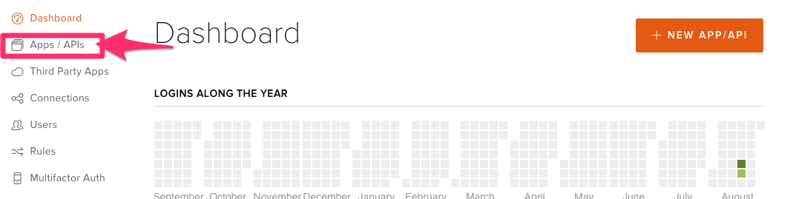
- Enter each url with which you want to use your app. Be sure to include the localhost address you use for development, your auth0 domain ending with
/login/callback, and the url of your deployed app. 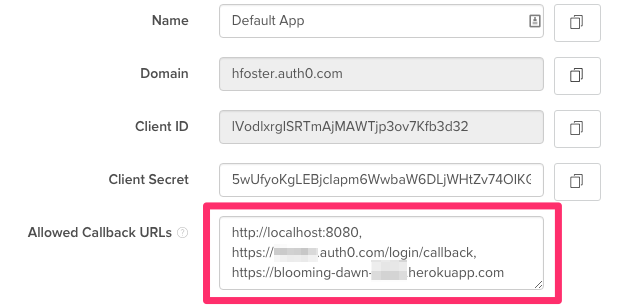 - Navigate to the Connections/Social menu.
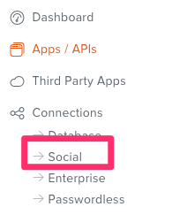 - Turn on Google, then click on it. This will open up a form in which you will need to enter the Client ID and Client Secret you will next retrieve from the Google API.
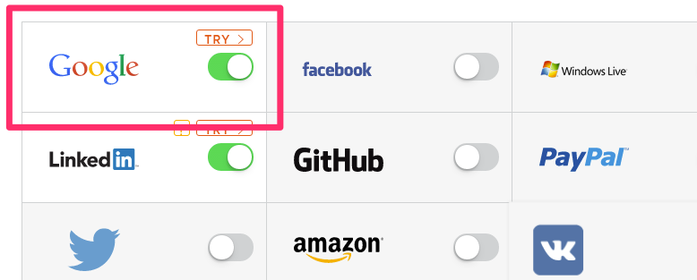 - Next, go to the Google Developers’ Console. If necessary, sign-up for an account.
- Create a new project.
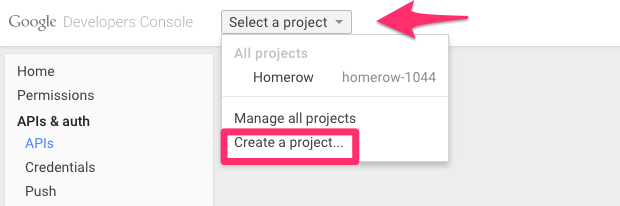 - Enter a name, and then create your project.
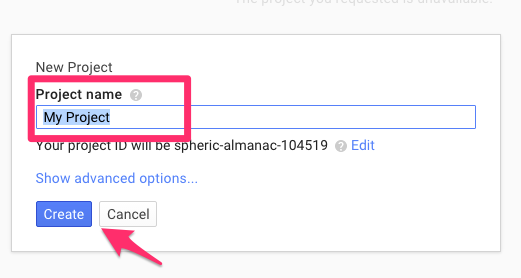 - Navigate to the Google+ API. 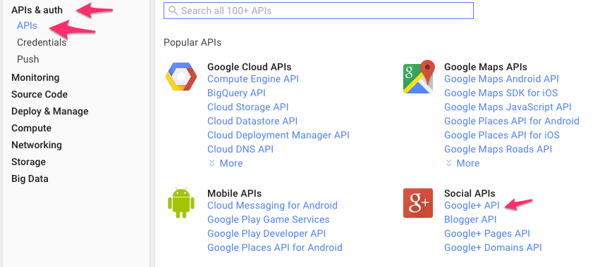
- Enable Google+, then go back to the main menu.
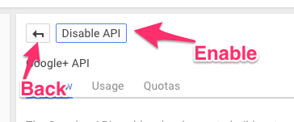 - Navigate to your credentials and add the OAuth 2.0 client ID.
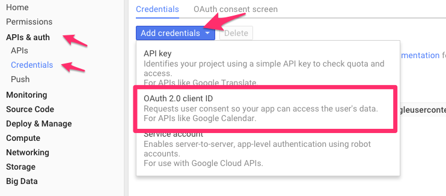 - Select Web application.
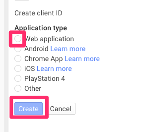 - Enter your auth0 domain into the JavaScript Origins field, and your auth0 callback url into the Redirect URI field, then create.
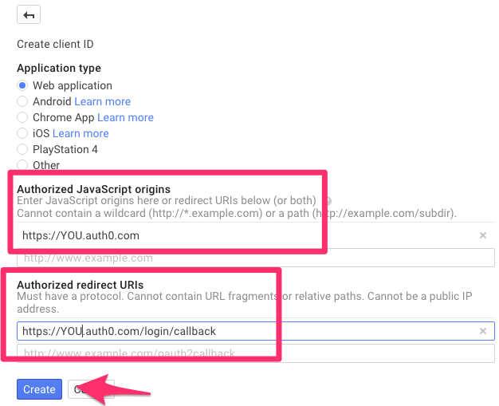 - Copy/paste the given Client ID and Client Secret into your Auth0 form for the Google API from step 4.
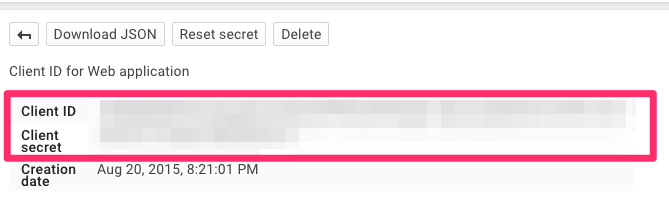
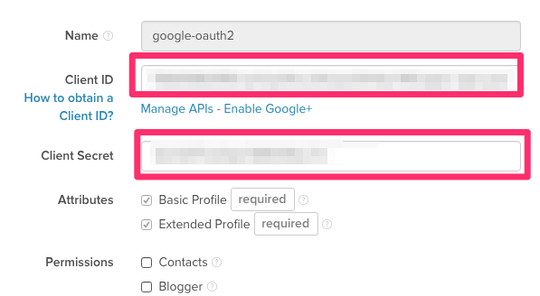 - Save, and check out your app! You should now be able to log in to it using Google+.
Written on August 22, 2015